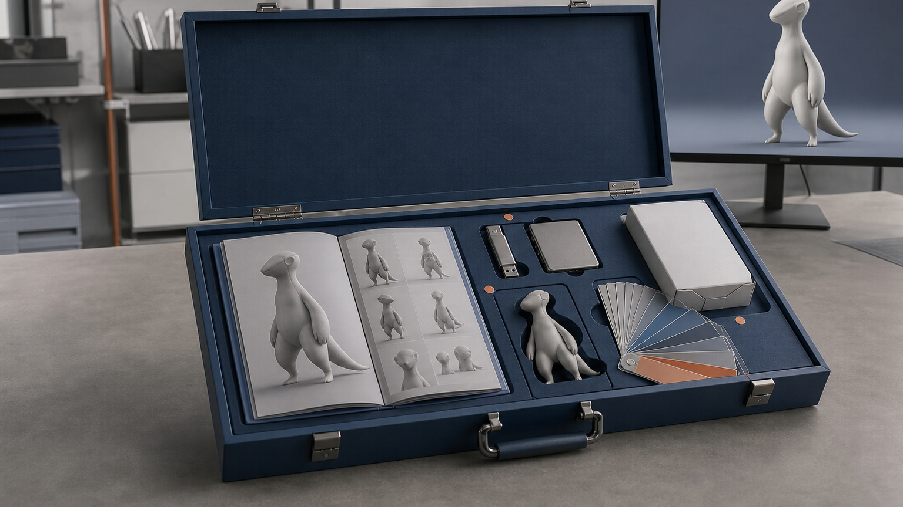
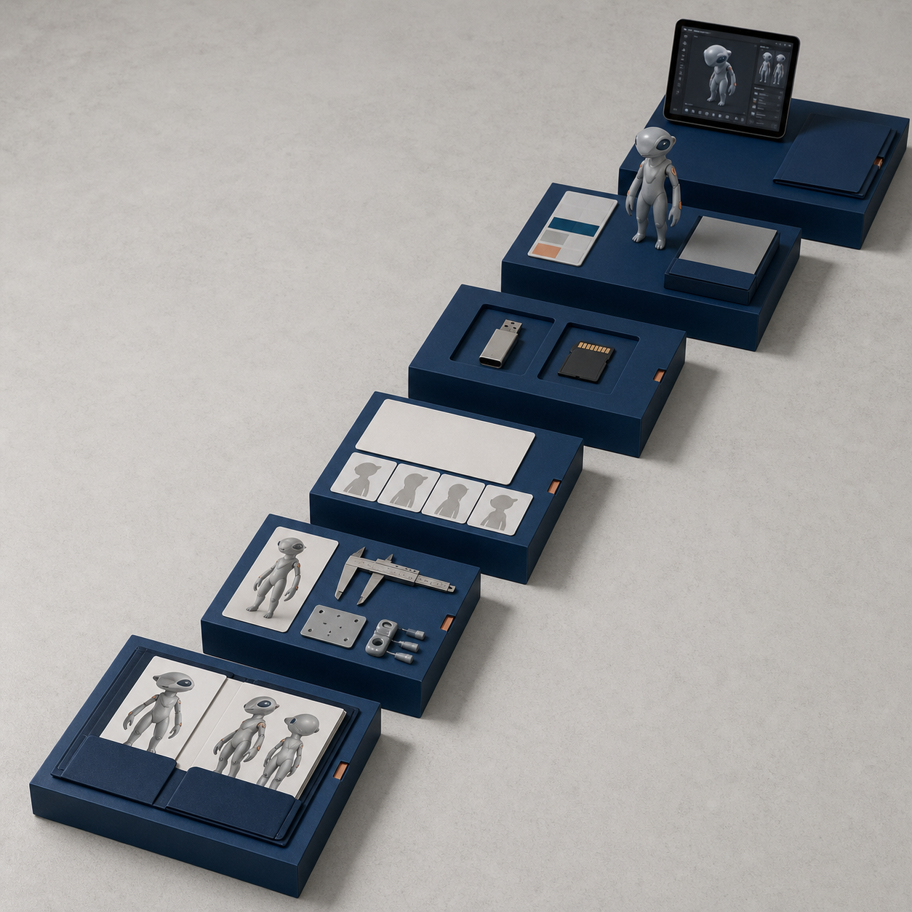
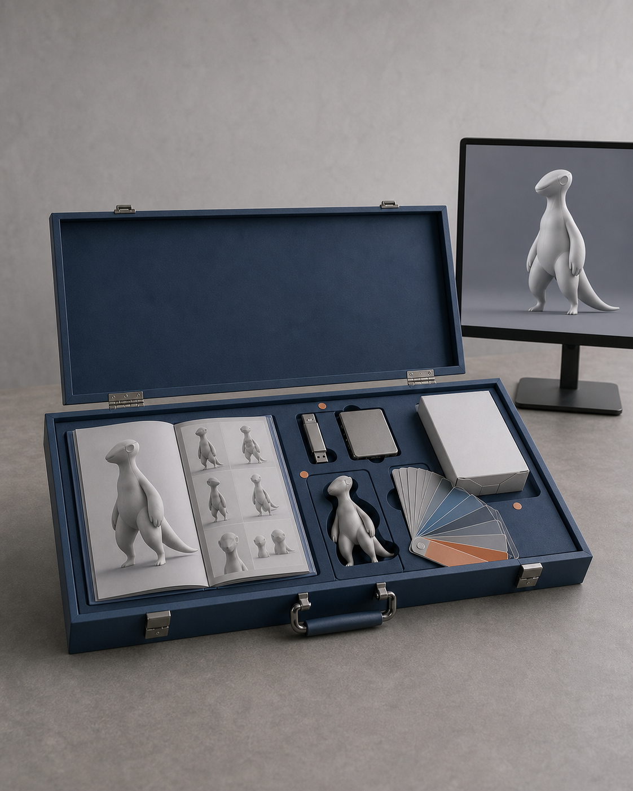

报名之后，你会收到什么
“报名之后会收到什么”容易被理解成一张固定成品清单。实际上，提交报名资料、人工确认、全款后的课前准备、五天课程和课后 30 天是不同节点。每个节点产生的资料和下一步也不同。提交表单本身不等于名额、付款或项目方案已经确认；五天结束时的样件数量、尺寸和精细程度，也要根据项目复杂度、设备、材料、打印排程和修正情况确定。

具体问题
“报名之后会收到什么”容易被理解成一张固定成品清单。实际上，提交报名资料、人工确认、全款后的课前准备、五天课程和课后 30 天是不同节点。每个节点产生的资料和下一步也不同。
提交表单本身不等于名额、付款或项目方案已经确认；五天结束时的样件数量、尺寸和精细程度，也要根据项目复杂度、设备、材料、打印排程和修正情况确定。
核心判断
报名后进入的是一条可追踪的项目推进链，而不是一次性领取固定成品包。链路中的交付可以分为四类：
这些内容应能互相对应，也必须保留完成度边界。方向稿不是正式印刷包装，灰模不是量产商品，网页草稿也不代表已经产生咨询或销售。
- 判断资料：项目卡、版权状态、尺寸、工艺预判和主/备/降级方案。
- 数字文件：视觉输入、人工修正后的三维主模型、网页展示用 GLB、打印用 STL 和独立站源码。
- 实体与表达资料：灰模或局部样、配色色板、基础或重点局部涂装、包装方向、说明卡和拍摄素材。
- 继续执行的工具：项目页、3D 展示、平台文案模板、30 天推广计划和课后复盘任务。
步骤或标准
第一步是提交公开报名资料，说明学习起点、项目目标、经验、设备和席位选择。课程团队随后人工联系，沟通项目起点、席位与费用边界，再进入预约金或全款确认流程。
全款确认后立即进入课前准备。已有作品者整理原画、角色设定、正侧背、材质参考和版权说明；只有想法者整理个人故事、关键词、参考图、希望做成的物品和使用场景。两类起点都要完成 iPad、Nomad、电脑、网络和账号准备。
五天内，Day 1 锁定项目卡、视觉输入和 Gate 1；Day 2 形成三维主模型、GLB、STL 与拆件方案；Day 3 完成切片记录、灰模或局部样、问题清单与配色色板；Day 4 推进涂装、包装方向、产品说明和拍摄；Day 5 整理个人独立站、3D 展示、内容模板与 30 天推广计划。
课后 30 天继续答疑与集中复盘，并根据实际情况修正模型、补充照片、完善独立站和执行发布计划。
常见错误
- 把提交报名表理解成名额、付款或项目方案已经自动确认。
- 只计算最终有几件成品，不区分判断资料、工作文件、验证样件和发布资料。
- 默认每个项目都能在五天内达到同样精度，忽略基础、标准和进阶出口。
- 混用 GLB 与 STL，或把灰模、包装方向和网页草稿写成正式商品。
- 等到开课当天才整理版权、视觉输入和设备，挤压后续制作时间。
与五天课程的关系
五天课程的每日交付不是彼此独立的赠品。Day 1 的范围判断控制 Day 2 的模型复杂度；Day 2 的 GLB 与 STL 分别服务网页和打印；Day 3 的灰模验证决定 Day 4 继续涂装、保留灰模还是降级为局部样；Day 4 的图片与说明资料再进入 Day 5 的个人页面和内容计划。
因此，判断交付是否完整，要看同一项目能否从输入、文件、实体到发布持续追踪，而不是只看最后一件样品。
事实 / 案例 / 完成度边界
本文依据课程公开报名流程、课前准备、五天计划、结课成果包与课后 30 天安排。图中的交付箱、资料、文件和中性样件都是流程示意，不是往期学员成果，也不代表已经发生报名、制作、展览或销售。
提交报名资料后由课程团队人工联系确认。具体付款信息与规则以人工确认和正式协议为准。结课成果按项目实际情况进入基础、标准或进阶出口；五天内不承诺人人完成商业级精修、正式包装印刷、批量生产、正式展览或销售。


长期招生｜青岛｜3–5 天短训｜评估后预约跟班｜每班最多 10 人。查看当前学习方案与费用
填写报名资料 →